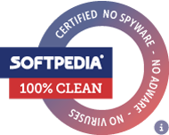

_ _ __ _ _ _ ___ _
/_\ _ __(_) / _\ ___ | |__ __ _ _ __ __| |_ __(_) / _ \_ _| |_ _ __ __ _
//_\\| '__| | \ \ / _ \| '_ \ / _` | '_ \ / _` | '__| | / /_)/ | | | __| '__/ _` |
/ _ \ | | | _\ \ (_) | | | | (_| | | | | (_| | | | | / ___/| |_| | |_| | | (_| |
\_/ \_/_| |_| \__/\___/|_| |_|\__,_|_| |_|\__,_|_| |_| \/ \__,_|\__|_| \__,_|
H O M E P A G E E S T . 2 0 0 8
This page was put together with Macromedia Dreamweaver MX 2004 — which kind of explains the look. No frameworks, no build tools, no fancy JavaScript. Just plain HTML, the way I learned it. I first wrote this page back in 2008 and have been quietly updating it ever since. These days it lives on GitHub Pages.
Honestly, this site is just where I drop my ideas.
I've never been good at writing things in a neat, structured way. Planning? Even worse. I just type whatever is on my mind at the moment. Sometimes it's a random thought, sometimes a tiny idea that goes nowhere, and every now and then it turns into something I didn't expect at all.
A lot of those thoughts have been sitting here for years. Somehow, this little site turned into a place where I can keep them.
It's also where I keep some of the software I've built along the way. Most of these projects started for simple reasons — I needed something, couldn't find it the way I wanted, or just got curious about how something worked under the hood.
I don't really see this as a portfolio. It's closer to a personal archive — a mix of things I've made, things I've learned, and a few ideas that somehow grew into actual working software.
<< https://udiscmounter.github.io/ >>
The idea for uDiscMounter started from a pretty simple problem.
Back in 2015, I was working with a lot of disc image files. ISO was everywhere, but there were also BIN, IMG, NRG, MDF, MDS, CCD, and plenty of other formats. I wanted something simple that could mount these files as virtual discs without installing a huge piece of software full of features I'd never use.
I looked around, tried a few programs, and still wasn't satisfied.
So I thought:
"Why don't I just make my own?"
And that's how uDiscMounter started.
At first, I didn't have a big plan. I just wanted a small Windows utility that could mount disc image files, get out of the way, and do its job. Nothing complicated.
I started building it as a personal project and kept adding things whenever I found something to improve. More image formats, better handling, a cleaner interface, better Windows integration, and eventually support for things I didn't even think about when I wrote the first version.
What started as a small experiment slowly became real software.
I spent years on it, fixing bugs, testing on different Windows versions, changing what didn't work, and sometimes rewriting parts completely. There were plenty of moments where I thought, "Why am I still working on this?" but I kept coming back.
One thing I liked about uDiscMounter was that it stayed relatively simple.
I never wanted it to become one of those apps that tries to do everything. The main idea was always:
Give me an image file, mount it, and let me get on with my work.
Of course, the project became much bigger than that simple idea.
Over the years, uDiscMounter taught me a lot about Windows software development. I learned from its bugs, its limits, its users, and even from parts of the code I'm not proud of anymore.
Looking back, the interesting part isn't the final software.
It's the journey from a simple thought in 2015 to something I kept developing for about ten years.
uDiscMounter was never a huge commercial product. It was a personal project that grew naturally over time. I built it because I wanted something like it, and I kept improving it because I enjoyed building it.
That's probably the most honest explanation of why it exists.
It started with a simple question:
"Can I make my own?"
So I did.
<< https://hardmon.github.io/ >>
HardMon started from a pretty simple idea.
I wanted to know what was actually happening inside my computer.
Back in 2015, I was spending a lot of time with Windows software and hardware. Whenever I wanted to check CPU temperature, usage, clock speed, memory usage, disk activity, or other hardware info, I had to open different tools or use apps that felt way bigger than what I needed.
So, as usual, I started thinking:
"Maybe I can just make one myself."
That was the beginning of HardMon.
At first, I didn't plan to make a complete hardware monitoring app. I just wanted a small Windows program that could show me some basic info about the machine I was working on.
» CPU usage.
» CPU temperature.
» Memory usage.
» Maybe a few other things.That's it.
But once I started, I got more interested in what Windows and the hardware could actually tell me.
I started experimenting with hardware sensors, temperatures, clocks, loads, storage info, battery info, and network stats. Some things were easy to read, some were surprisingly hard, and some depended heavily on the hardware itself.
That was actually one of the fun parts.
Every computer was a little different.
A desktop could have different sensors from a laptop. One motherboard could expose info that another didn't. Some sensors worked perfectly, while others simply didn't exist on certain machines.
So HardMon slowly became more than just a small program showing CPU usage.
I kept adding things whenever I found something interesting or useful.
The interface changed many times too. I wanted the info to be easy to read without turning the app into a huge dashboard full of unnecessary graphics.
The idea was always simple:
Show me what my computer is doing, and don't get in the way.
Over time, HardMon grew into a proper hardware monitoring project.
It could monitor CPU, GPU, RAM, HDD/SSD, battery, and network info. I also added things like saving monitoring data to a text file and generating battery reports.
Eventually, another idea came out of the project.
Instead of keeping all the hardware-monitoring code inside the main app, why not make the monitoring part reusable?
That's where HardMonLib came in.
I started separating the hardware detection and sensor-reading code into a small .NET library. This made it possible to use the same monitoring functionality from other apps instead of building everything from scratch again.
And then I went a little further.
I added a small built-in web server so the hardware info could also be viewed from a browser. This meant I could start HardMon on one computer and check its hardware info from another device on the same network.
Looking back, that wasn't really part of the original plan.
HardMon just kept growing naturally as I experimented with it.
That's probably what I like most about personal software projects.
You don't always know where they're going when you start.
Sometimes you begin with a very small idea, write a few lines of code, and years later you realize that little experiment turned into something much bigger than you imagined.
HardMon is one of those projects for me.
It started because I wanted a simple way to look inside my own computer.
I kept working on it because I was curious how far I could take it.
And somewhere along the way, it became real software.
There was never a big company behind it or a huge development team.
It was mostly just me, a Windows machine, a lot of experimenting, and quite a few hours spent wondering why a particular hardware sensor refused to work.
And honestly, that's how most of my software projects begin.
I need something.
I can't find it the way I want it.
So I think:
"Fine. I'll make it myself."
<< https://hddmonitor.github.io/ >>
HDD Health Monitor started from another very simple problem.
I wanted to know what was really happening with my hard drives.
A hard drive can look completely normal from Windows. Files open normally, Windows boots normally, everything seems fine. But underneath all that, the drive may already be reporting info through its S.M.A.R.T. data.
I got interested in that info because I often worked with old computers, old hard drives, backup disks, and second-hand hardware.
When I checked a drive, I didn't always want a big app with a lot of extra features. Sometimes I just wanted to ask:
"What is this drive actually telling me?"
That question was the starting point.
At first, I only wanted a small Windows utility that could detect a drive and show its S.M.A.R.T. info.
» Temperature.
» Power-on hours.
» Reallocated sectors.
» Pending sectors.
» Drive info.
» And the actual S.M.A.R.T. attributes behind those numbers.The more I worked on it, the more I realized that just showing "Good" or "Bad" wasn't enough.
Sometimes the interesting info is hidden inside the raw attributes. A drive may still appear to work normally while already reporting something worth investigating.
So I wanted the program to show the info rather than hide it.
That became one of the main ideas behind HDD Health Monitor:
Don't just tell me the drive is healthy. Show me the info behind it.
I also wanted the program to stay portable.
» No complicated install.
» No large framework to install first.
» No account.
» No unnecessary background service.Just a small executable I could keep in a folder, on a USB drive, or with my other Windows troubleshooting tools.
Working with storage hardware also taught me that things are rarely as simple as they look.
Different HDDs report different attributes. SSDs can expose different info from traditional hard drives. NVMe drives have their own health info. USB storage can also depend on the USB-to-SATA or USB-to-NVMe bridge inside the enclosure.
So the project became another experiment in understanding how Windows, storage devices, controllers, and S.M.A.R.T. info all fit together.
I didn't start HDD Health Monitor because I wanted to build another huge disk diagnostic suite.
I just wanted a small tool I could use when I needed to take a closer look at a drive.
That's still the basic idea.
A small Windows utility.
A drive connected to the computer.
And as much useful drive info as the hardware is willing to provide.Looking back, HDD Health Monitor is very much the same kind of project as my other software.
I needed a tool.
I wanted it to work in a particular way.
So I built it myself.
<< https://programblocker.github.io/ >>
ProgramBlocker started from a simple observation: sometimes you just need to stop a program from doing something.
Not the whole computer. Not the whole network. Just one program.
Maybe it's a game that keeps pulling a child away from homework. Maybe it's a social media app that opens itself at the wrong time. Maybe it's an old application that tries to phone home every few minutes. Whatever the reason, I wanted a way to say:
"This program? No. Not now. Not like this."
That was the beginning of ProgramBlocker.
At its core, ProgramBlocker is a gatekeeper. It sits between the programs on your computer and the things they want to do. You tell it which programs should be blocked, and how. Some programs shouldn't run at all. Some programs can run, but shouldn't reach the internet. Some programs should be blocked only during certain hours — school time, work time, bedtime.
So I built it around three simple ideas:
» Block execution. The program simply cannot be launched.
» Block internet access. The program can run, but it can't talk to the network.
» Block both. For when you really mean it.That part was straightforward enough. But then I started thinking about what happens after someone tries to get around the block.
And that's where things got interesting.
Because a basic block is easy to bypass. A user can rename the executable. Move it to another folder. Delete it and copy it back. If the block is only looking at a file path or a file name, a few seconds of effort is enough to walk right past it.
I didn't want ProgramBlocker to be that kind of tool.
So the Pro edition adds something I call layered file blocking. Instead of trusting a single check, it watches the file itself. Rename it? The block follows. Move it? The block follows. Delete it and put a copy somewhere else? The block follows that too.
That's the anti-bypass part.
"You can't work around the block by renaming, moving, or deleting the protected executable."
ProgramBlocker is a Windows tool, and I built it the same way I build most of my software — because I wanted something that didn't exist in the shape I needed.
It's useful for parents who want to limit a specific game or application. It's useful for internet cafes and PC rental shops that want to lock certain programs so customers can't open them. It's useful for anyone who wants to focus by blocking social media or games during work hours. And it's useful for anyone who just wants to keep unwanted programs from running on their machine.
The trial version gives you a taste: ten uses of internet blocking, ten uses of execution blocking, limited scheduling, and a limited right-click menu in Explorer. The Pro version removes the limits entirely — unlimited blocks, unlimited scheduling, unlimited file protection, password-protected blocks, and the full right-click integration.
There's also a scheduling feature, which is probably my favorite part. You can set a block to be active only at certain times. A game that's fine on weekends but not on school nights. A distracting app that should stay quiet during work hours. The block doesn't have to be permanent. It just has to be right.
If there's one idea behind ProgramBlocker, it's this:
You should be able to decide what your computer does, and what it doesn't.
Not by uninstalling things. Not by breaking things. Just by telling a small program what you want, and having it hold the line.
It started because I needed a tool like that.
So I built it.
<< https://avdm-cli.github.io/ >>
AVDM started from a problem that keeps coming back in my line of work: managing virtual drives should not require a full graphical application.
Back in 2012, I was working with a lot of disk images. ISOs, BINs, IMGs, NRGs — the usual crowd. I had already been building uDiscMounter around that time, but there were situations where I didn't want a GUI at all. I wanted something I could script. Something I could run from a batch file, a scheduled task, or a remote session. Something that could be automated.
That's where the idea for AVDM came in.
Instead of clicking buttons, I wanted to type a command. Instead of opening a window, I wanted to run a single line from a terminal. Instead of waiting for a GUI to load, I wanted something that could execute instantly, mount an image, and get out of the way.
So I built a command-line utility around that idea.
At its core, AVDM is a tool for creating virtual CD/DVD drives and mounting disk image files in Windows. It supports more than twenty image formats. It can handle password-protected images. It can manage multiple virtual drives at the same time. And it does all of this from the command line, which means it can be scripted, scheduled, and automated in ways a GUI simply cannot.
The command set is intentionally small and direct:
» avdm -install — installs the virtual drive driver.
» avdm -add [drive:] "[image file]" [password] — mounts an image to a virtual drive.
» avdm -remove [drive:] — ejects an image from a virtual drive.
» avdm -list — shows currently mounted virtual drives.
» avdm -setnum [number] — configures the number of virtual drives.
» avdm -changedrive [device] [new drive:] — changes a drive letter assignment.
» avdm -formats — displays all supported file formats.
» avdm -help — shows help information.
» avdm -docs — opens documentation.That's it. No unnecessary features. No background services. No bloat. Just the commands you need to mount and manage virtual drives, and nothing else.
One thing I liked about building AVDM was how different it felt from my GUI projects. With uDiscMounter, I spent a lot of time thinking about windows, buttons, and user interaction. With AVDM, the interaction is a single line in a terminal. That simplicity changes how you design software. It forces you to think about clarity instead of comfort. Precision instead of presentation.
The project also taught me a lot about Windows drivers and low-level storage handling. Virtual drives are not just files that get read — they involve driver installation, device management, and the kind of system-level work that sits closer to the hardware than most people realise. AVDM runs quietly in the background, but underneath, it's touching parts of Windows that most applications never need to go near.
Looking back, AVDM is a small utility. It doesn't try to be anything more than it is. But it does one job well, and it does it in the way I wanted: cleanly, quickly, and from the command line.
That's probably the most honest explanation of why it exists.
I needed a tool like that.
So I built it.
<< https://github.com/arisohandriputra/pongo-video-cutter >>
Pongo Video Cutter started from another small annoyance.
Sometimes I don't want to re-encode a video just to cut out a piece of it.
If the video is already encoded the way I want, re-encoding it just to remove a few seconds feels unnecessary. It takes time, it can reduce quality, and it creates another copy of something that was already perfectly usable.
So I wanted a simple Windows tool that could cut and join video files without re-encoding whenever the source allowed it.
The project became an experiment around FFmpeg, DirectShow, video streams, containers, and the slightly messy world of video compatibility.
I also wanted a preview window inside the app, so I could see what I was working with instead of blindly entering timestamps.
The result became Pongo Video Cutter.
It's another example of how most of my projects begin. There wasn't really a big product plan behind it. I just wanted something to do a particular job, and I started building it.
These are the languages I've worked with over the years. Some I use daily, some I reach for when a project calls for them, and some I just enjoy tinkering with.
____ / ___| | | | | | |___ \____|C Low-level, system work |
____ _ _ / ___|| | | | | | | | | | | | | |_| | | |___ | _ | \____||_| |_|C++ Windows apps, utilities |
____ # # / ___| #### | | # # | | #### | |___ # # \____|# #C# .NET, Windows tools |
_____ # # | ___|#### | |__ # # | __| #### | | # # |_| # #F# Functional experiments |
_ ____ __ __ / \ / ___|| \/ | / _ \ \___ \| |\/| | / ___ \ ___) | | | | /_/ \_\____/|_| |_|Assembly Reverse engineering, low-level |
____ __ __ | _ \ \ \ / / | |_) | \ V / | __/ | | |_| |_|Python Scripting, automation |
__ __ ____
\ \ / /| _ \
\ \ / / | |_) |
\ \/ / | _ <
\ / | |_) |
\/ |____/
Visual BasicClassic Windows dev |
____ ____ / ___|| _ \ | | _ | | | | | |_| || |_| | \____| \___/Go CLI tools, services |

» uDiscMounter
» I found uDiscMounter when I was dealing with some old disc images. I still have backups from the days when CDs and DVDs were everywhere. Being able to mount the image instead of burning another disc was exactly what I needed.
— Daniel Brooks» I had an old NRG image that I couldn't be bothered converting. I tried uDiscMounter and it mounted it. That was basically enough to make me keep it around.
— Sébastien Moreau» I had a pile of BIN and IMG files from old software discs. Most mounting tools wanted to install a whole suite of virtual drives and drivers. uDiscMounter just mounted what I gave it and stayed out of the way.
— Alexei Volkov» HardMon
» HardMon is the kind of utility I like. It gives me the info I'm looking for without turning the whole screen into a giant dashboard. I mainly use it on older Windows machines.
— Pranav Iyer» I was testing an old PC after replacing the CPU cooler. I left HardMon running while putting some load on the machine, which made it easy to see the temperature changes.
— Andrei Popescu» I originally used HardMon just for CPU temperature, but ended up using the memory and network info quite a bit too. It became one of those quick troubleshooting tools.
— Evan Miller» The built-in web server is a neat touch. I can check the hardware info on my main PC from my laptop while both are on the same network. Didn't expect that from such a small tool.
— Marcus Johnson» HDD Health Monitor
» I had an old hard drive from a previous PC and wanted to check it before using it for backups again. I didn't need a huge diagnostic suite. I just wanted to see what the drive was reporting.
— Rizwan Hakim» The portable exe is probably my favorite part. I keep a USB stick with a few Windows utilities on it and this is one of them. Plug in the drive, run it, check the info and move on.
— Thomas Weber» I like that it actually shows the attributes. A lot of utilities give you a big green health message and stop there. Sometimes I want to see the numbers myself.
— Michael Turner» One of my backup drives started reporting a pending sector. The drive was still working, but I didn't want to take chances with important files. I moved the data and replaced the disk.
— Luca Romano» Small program, surprisingly useful. I mostly use it with external drives. USB support obviously depends on the enclosure, but when the enclosure passes the info through, it works nicely.
— Omar Khalid» I was testing an NVMe drive and wanted to look at its health info. The usual benchmark numbers weren't really what I was looking for. This was more useful for what I was doing.
— Aarav Shah» The thing I appreciate most is that it doesn't try to hide the info. The health status is useful for a quick look, but I still like being able to see the actual attributes.
— Yuki Nakamura» ProgramBlocker
» I have two kids and one shared PC. I don't want to lock the whole computer — just one game during homework hours. ProgramBlocker does exactly that and nothing else. That's what I wanted.
— Sarah Mitchell» I run a small internet cafe. We use ProgramBlocker to keep certain apps from being opened on customer machines. The scheduling feature is handy because we only need it during busy hours.
— Bambang Wijaya» I used ProgramBlocker to block the desktop version of a social media app during my work hours. It's a small thing, but it made a real difference. Focused sessions became easier.
— Robert Chen» The layered file blocking in the Pro version is what sold me. I tried blocking a program once with another tool and it was trivially bypassed by renaming the exe. ProgramBlocker's block follows the file, not just the path.
— Fatima Al-Zahra» AVDM - AriVirtual Drive Manager
» I manage a small lab with a few dozen machines. We needed a way to mount diagnostic ISOs on them without clicking through a GUI every time. AVDM lets us script the whole thing. One line per machine and the image is mounted.
— Stefan Novak» I have a bunch of old game discs backed up as ISOs. I don't always want to open a full application just to mount one. AVDM is just a command I type in the terminal and it's done. Simple and fast.
— Rakesh Kumar» The password protection for encrypted images is something I didn't expect from a command-line tool. I use it for some archived backups that are password-protected. Works exactly as advertised.
— Elena Petrova» I run a small PC repair shop. When I need to mount a bootable ISO or a diagnostic image, I open a terminal and run AVDM. No installation wizard, no waiting for a GUI. Just the command and done.
— Dedi Kurniawan» Pongo Video Cutter
» I just needed to trim a few seconds off some clips without losing quality. Every other tool wanted to re-encode the whole thing. Pongo Video Cutter did the cut and kept the original stream intact.
— John Peterson» The preview window is what I liked most. I could actually see where I was cutting instead of guessing timestamps and hoping for the best.
— Hiroshi Tanaka» I've used FFmpeg on the command line for years, but sometimes I just want a small GUI that cuts a video without re-encoding. This is that GUI. Simple, quick, and it does the job.
— Carlos Mendes
Hi, I'm Ari.
I've been around computers and IT for more than 15 years, mostly doing software development and computer networking. I've always enjoyed building things, figuring out how they work, and turning ideas into software people can actually use.
I was born and raised on a small island in Indonesia called Lombok. That's where my journey with computers and software started, and it's still a big part of who I am.
I started playing with computers when I was young. Over the years, that curiosity slowly turned into programming, software development, networking, Windows system experimentation, Linux servers, and eventually a collection of personal software projects.
I don't see myself as someone who always has a perfect development plan. Most of the time, I just find something interesting, need a tool, run into a problem, or get curious about how something works.
Then I start experimenting.
Sometimes the result is just a small program I use once. Sometimes it becomes something I keep working on for years.
That's pretty much how most of the software on this page came to exist.
If you're representing a business or organization and you're interested in working together or using any of my software, feel free to reach out.
| 2025 – Present | Still building software on my own, mostly personal projects. Some are small experiments, others turn into long-term things I keep maintaining for years. |
| 2020 – Present | Kept building Windows apps, command-line tools, server-side stuff, upload services, APIs, and whatever else I felt like trying. |
| 2018 – Present | Got deeper into Linux servers, web development, databases, networking, self-hosting, and running my own services. |
| 2016 – Present | Worked on utilities for monitoring hardware, system resources, storage, networking, and other corners of Windows. |
| 2015 – Present | Built and maintained uDiscMounter, a Windows disc-image mounting utility that supports a wide range of image formats. |
| 2015 | Started taking Windows desktop software and system utilities more seriously. This was also when a few projects began that ended up running for years. |
| 2012 – 2014 | Spent most of my time learning programming, Windows internals, networking, and building small tools and experiments. AVDM began during this period as a command-line alternative to GUI disc mounting tools. |
| 2011 | Started making small software and tools, mostly experimenting with programming, Windows, and game-related utilities. |
This site isn't meant to be a polished corporate portfolio. It's much closer to a personal notebook that happens to be online.
Some pages are new, some ideas are old, and some of the design is intentionally left the way it used to be.
There's something I like about old websites. They didn't always try to hide where they came from. Sometimes you could look at the HTML, see the tables, the simple links, the old fonts, the little images, and immediately know that a real person had put the page together.
I suppose that's what I want to keep here.
Not everything has to be modern. Not everything has to be perfect.
Some things can simply remain as a record of where they started.
This page is one of those things.
,---------------------------,
| .-------------------. |
| | T H A N K S | |
| | FOR VISITING! | |
| '-------------------' |
| |
| Come back soon, OK? |
'---------------------------'
/\_/\ ( o.o ) <-- me, still debugging > ^ <